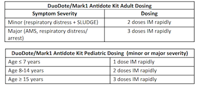

Recognition
- Patient with suspected or know exposure to a nerve or organophosphate agent with salivation, lacrimation, urination, defecation, GI distress, emesis [SLUDGE], muscle twitching, seizures, respiratory arrest), bradycardia, bronchorrhea, and/or bronchospasm.
Treatment for all providers
- Utilize appropriate personal protective equipment (PPE).
- If the scene is determined to be unsafe, call for additional/appropriate resources and stage until the scene is safe.
- Ensure appropriate resources are available to perform decontamination.
- If exposure is related to a suspected chemical weapons incident, consider activation of the CHEMPACK program through Incident Command and Regional Control.
- Obtain history of ingestion/exposure.
- Utilize the Multiple Patient Incident Protocol as indicated.
- Routine patient care.
- If DuoDote or Mark1 Antidote Kit(s) are available, treat as below: 
- Consider consulting the Regional Center for Poison Control and Prevention (800- 222-1222) for advice.
- Transport the patient to nearest appropriate Hospital Emergency Facility.
Cardiac/Advanced
- Manage seizures as per the age appropriate: Protocol.
Paramedic
- Manage seizures as per the age appropriate: Protocol.
- For the patient with minor symptoms (respiratory distress + SLUDGE), if nerve antidote kits are unavailable or if additive doses are required, administer ATROPINE 2 mg (peds 0.02- 0.05 mg/kg) IV/IO/IM every 5 min until symptoms resolve and (if available) PRALIDOXIME 600 mg (peds 15-25 mg/kg) IV/IO over 30 min or IM.
- For the patient with major symptoms (minor + AMS or seizures), if nerve antidote kits are unavailable or if additive doses are required, administer ATROPINE 6 mg (peds 0.02- 0.05 mg/kg) IV/IO/IM every 5 min until symptoms resolve and (if available) PRALIDOXIME 600 mg (peds 15-25 mg/kg) IV/IO over 30 min or IM.